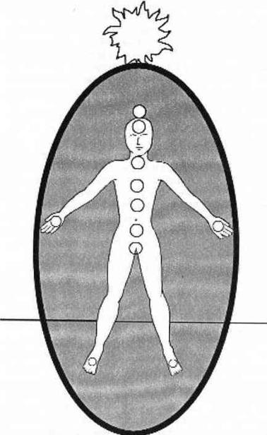

ÇAKRALARA GİRİŞ
Çakra, Sanskritçe bir kelimedir; bedende bulunan bir dizi dairesel enerji merkezine verilen addır. Avuç içlerinde ve ayak tabanlarında bulunan çakralardan başka gövdenin ortasında sıralanan yedi ana çakra vardır. Ayrıca auranın tepesinde bulunan ve altın güneş denen bir çakra daha vardır. Topraklanma kordonu en alttaki çakradan, bir başka deyişle birinci çakradan çıkar.
Çakra sistemi endokrin sistem ile doğrudan birbirlerine bağlantılıdır. İkinci çakradan itibaren her çakra bir salgı beziyle ilgilidir. Birinci ve yedinci çakralar ise endokrin sistemin fiziksel ve ruhsal regülatörleridir. Salgı bezlerinde ya da çakralardaki herhangi bir dengesizlik bir diğerinin de dengesini bozar. Her iki sistemden birine uygulanan tedavi, diğerine de yararlı olur. Çakralarınızı iyileştirirken endokrin sisteminizi de aklınızda bulundurun.
Doğu’daki pek çok dini inanış çakralar hakkında detaylı bilgi sunar. Yedi çakranın her birinin ayrı bir ismi, kendine özgü bir notası, rengi, biçimi, sembol hayvanı ve farklı özellikleri vardır. Tüm bu sınıflandırmalar ilginçtir ama tıpkı aura ve beden gibi çakraların fonksiyonları, anlamları ve tarihçeleri hakkında yıllarca çalışıp da onları kullanmayı öğrenmemeniz de mümkün olabilmektedir. Onun için bu sınıflandırmalarla zaman kaybederek dikkatinizi dağıtmayacağım. Ayrıca çakralarınızın bir kez farkına vardıktan sonra onlar size gerekli bilgileri verecektir.

Şekil 11. Çakra Sistemi
En basit açıklamayla çakralar belli yeteneklerin tutamaklarıdır. Spiritüel bilgi ile nasıl çalışacağınız konusundaki yeteneğinizi merak ediyorsanız o zaman başınızın tepesindeki çakraya (yedinci çakra) bakın ve durumunu kontrol edin. Ruh beden dengesini sağlama ve kendi kendinizi tedavi etme yeteneğinizi görmek istiyorsanız kalp çakranıza (dördüncü çakra) bir göz atın. Fiziksel ve ruhsal olarak bağışıklık sisteminizin ne kadar etkin çalıştığını kontrol etmek istiyorsanız o zaman solar güneş ağına (üçüncü çakra) bakın.
Auranızdaki enerji sorunları hayatınızda neler olup bittiğinin bir yansımasıdır ama sorunların kökü çakralarınızda yatar. Auranızın tepesini kabartıp, aşırı topraklanmış zayıf auranızı tamir edebilirsiniz ama çakralarınızdaki enerji merkezlerini kontrol ederek neler olduğuna bakmazsanız tek yaptığınız sürmekte olan enerji sorunlarına yara bandı yapıştırmaktan ibaret kalır. Eğer birinci çakranızın önüne sürekli olarak korunma amaçlı imgeler yerleştirmek zorunda kalıyorsanız ya da topraklanmak imkansızsa o zaman sorunun temeline inerek birinci çakranızı iyileştirmelisiniz. Aura sınırlarınız sürekli olarak bulanıksa ve nöbetçiniz işe yaramıyorsa bunlar koruyucu üçüncü çakranızın tedaviye ihtiyacı olduğunun açık işaretleridir.
Çakralarınızdaki hasarları ya da rahatsızlıkları bir kez temizledikten sonra elde edeceğiniz berraklık şok edici düzeyde olacaktır. Auranızı okuyarak enerji zayıflıklarınızı ve güçlerinizi görebilir; nasıl işlediğinizi anlarsınız. Çakralarınızı okuduğunuzda temel enerjilerinize vakıf olarak yaptıklarınızı neden yaptığınızı görürsünüz.
Bir uyarı daha: Herhangi bir öğretide, öğrenciler sıklıkla bir tür grup narsisizmi geliştirirler ve bu şekilde kendilerini eğitimsiz kitlelerden daha özel, daha ayrıcalıklı bir topluluk olarak görürler. Çevrenizdeki kimse bir farkındalık yaşamazken (tabii sizin görüşünüze göre) ve hiçbir spiritüel gelişme göstermezken, siz kendinizi, çakralarınızı tedavi ettiğiniz için böbürlenirken bulursanız bu duruma sakın şaşırmayın. Yine de üstünlüğünüzle pek öğünmeyin. Yeniden salak olacağınız günler gelir, endişe etmeyin.
Eğer çakralarınızı sağlıklı bir şekilde incelerseniz edindiğiniz bilginin size daha çok soru; genellikle de cevaplanması zor, köklü sorular getirdiğini göreceksiniz. Kimi zaman çakralarınızda gördükleriniz yüzünüze tokat gibi çarpacak ve bütün eğitiminizi bırakmak isteyeceksiniz. Kendinizi üstün biri olarak değil tam bir salak olarak göreceksiniz. Bu iyi bir şeydir. Bu gerçek öğrenimin zaman zaman olması gerektiği şeklidir.
Öğrendikleriniz sizi çok fazla yöne doğru çekmeye başladığında en başa dönün. Topraklamaya devam edin. Bu kitabın ilk bölümlerini okuyun. Sorun çözme kılavuzunu okuyun, işleri basit tutmaya çalışın. Yeniden topraklandığınızda sıkıntı yaratan noktaya geri dönün. Göreceksiniz ki, bu kez olaya daha farklı bir açıdan bakacaksınız. Ayaklarınızı yerde tutarak uçmayı öğrenebilirsiniz. Kendi sorunlarınızın arasında uçabilmeyi öğrendiğinizde başkalarına bakmaya vaktiniz olmayacak. Ama unutmayın herkesin aurası ve çakraları vardır. Kimi insanlar onlar hakkında tek bir şey bile bilmeden sağlıklı spiritüelliklerini yaşarlar. Çakralar hakkında bir şey duymadıkları için o insanların çakralarının hastalıklı olduğu yanılgısına kapılmayın. Her insanın farklı bir yolu vardır, hepsi bu.
Eğer çakralar hakkında başka kitaplar da okuduysanız şimdi öğrendikleriniz daha önce öğrendiklerinizle çelişebilir. Tek savunmam şu: Ben hayatımda hiç çakralarla ilgili bir kitap yorumlamadım! Çakralar hakkında bildiğim her şeyi çakraları incelerken çakraların kendisinden öğrendim. Bu kitap çakralar hakkında bilimsel bir inceleme değil; doğrudan çakraların dünyasından tercüme edilmiş bir hikaye. Umarım, size, kendi çakra dünyanıza girmenizde önderlik eder; orası kendinize dair her türlü çelişkiyi fark edebileceğiniz bir yerdir.
ÇAKRA KONTROLÜ
Çakraları yorumlamaya ya da incelemeye başlamadan önce onlara kısa bir tedaviye tabi tutmak iyi bir fikirdir. Çakraların da tıpkı aura gibi kendilerine özgü biçimleri vardır, yorumlamayı kolaylaştırmak için başlamadan önce onları bu biçimlerine döndürmek yararlı olacaktır.
Ben her çakrayı, yüzü bana bakacak şekilde dönen bir enerji diski olarak canlandırırım. Sağlıklı çakralar 9 ila 13 cm çapındadır. Ancak el ve ayak çakraları daha küçüktür. Altın güneş çakrası sizi besleyeceği enerjinin miktarına göre istediği herhangi bir boyutu alabilir. Derinlemesine çakralar 5-9 cm ila yaklaşık 30 cm büyüklüğünde olabilirler; gene beslenen enerji miktarı ile orantılı olarak. Kalın ve uzun çakralar daha fazla enerji yüklenmiş; kısa ve ince çakralar daha az enerji yüklenmiş çakralardır.
Sağlıklı bir çakrada, açıkça belirgin dairesel bir sınır; o çakraya özgü rengin temiz ve sağlıklı tonunu ve çakradan sürekli sakin akan bir enerji ararım. Bu tanımlamadan sapmalar beklenmeli ve hatta ilk yorumlamalarda görülürse sevinilmelidir. Sapmalar sizin iyi bir okuyucu olduğunuz anlamına gelir ve çakralarınız bu mesajı gönderecek kadar farkında demektir.
Çakralar tıpkı auralar gibi faal ve meşguldürler. Eğer yorumlamaya başlamadan önce onları temizlemez ve sakinleştirmezseniz o zaman her çakra en az bir saat boyunca size geçmiş, şimdiki zaman ve gelecek hakkında hikayeler anlatacaktır. Hikayeler harikuladedir ama her zaman şu an için geçerli değildir ve her zaman zorlukların nasıl üstesinden geleceğiniz hakkında aydınlatıcı olmayabilirler.
Çakra kontrolü adını verdiğim tedavi, çakralara ideal şekillerini, renklerini ve boyutlarını hatırlatmak içindir. Bir yorumlama ya da tedavi sırasında çakra kontrolünden geçmiş çakralar size her türlü sapmayı, geçmişte ya da gelecekte değil ama şimdiki haliyle gösterecektir. Çakra kontrolü onları temizleyecek ve şimdiki zamana çekecektir, onları hazır hale getirecektir.
Çakra kontrolü sırasında unutmamanız gereken önemli bir nokta var. Şu anda siz, çakralarınıza ne yapmaları gerektiğini söyleyeceksiniz; oturup anlattıkları hikayeleri dinlemeyeceksiniz. Eğer durur ve ne söylediklerini dinlemeye başlarsanız bu kısa bir tedaviden çıkar ve zaman alan bir yorumlamaya dönüşür.
ÇAKRA KONTROLÜ NASIL YAPILIR?
Altın güneş çakranızın, auranızın tepesine dokunduğunu düşünün. Açık ve berrak olduğunu, altın enerjinin içeriye özgürce dolduğunu görün. Kenarlarının, auranızın kenarının ve auranız dışındaki enerjinin ayrı ayrı göründüğü güçlü bir resim çizin.
Başınızın tepesindeki yedinci çakradan başlayarak bu enerji merkezini sağlıklı, açık, dairesel ve tanımlanmış olarak hayal edin; içinin berrak, hayat dolu, mor renkli bir enerji ile dolduğunu düşünün. Şimdi dikkatinizi alnınıza verin ve altıncı çakranızı (ya da üçüncü göz) sağlıklı, açık, dairesel ve tanımlanmış olarak hayal edin; içinin berrak, hayat dolu, çivit mavisi renkle dolduğunu düşünün. Dikkatinizi beşinci çakraya, yani boğaz çakramza (boğazınızın başladığı ve hafif bir baskı hissettiğiniz noktanın tam üst kısmındadır) yönelttiğinizde bu çakrayı da sağlıklı, açık, dairesel ve tanımlanmış olarak hayal edin; içinin berrak, hayat dolu, camgöbeği rengiyle dolduğunu görün. Her çakranızı ziyaret etmek için kafanızın dışına uçmayın. Tüm bunları kafanızın içindeki odadan pekala izleyebilirsiniz.
Dikkatinizi dördüncü çakraya; yani kalp çakranıza (göğüs kafesinizin merkezindedir) çevirin, çapını üstteki çakralar kadar genişletin ve bu çakrayı sağlıklı, açık, dairesel ve tanımlanmış olarak hayal edin; içinin berrak, hayat dolu zümrüt yeşili bir renkle dolduğunu görün. Üçüncü çakranız ya da güneş sinir ağı çakranız sağlıklı, açık, dairesel ve tanımlanmış olmalı; içi berrak, hayat dolu güneş gibi sarı renkli enerji ile dolmalıdır. Şimdi ikinci çakranızı (göbeğinizin tam altındadır) sağlıklı, açık, dairesel ve tanımlanmış olarak hayal edin; içinin berrak, hayat dolu turuncu renkli enerjiyle dolduğunu görün.
Kafanızın içinde kalın ve birinci çakranızı (erkeklerde testislerin olduğu kısımda, kadınlarda vajinanın aşağısına doğrudur) sağlıklı, açık, dairesel ve tanımlanmış olarak hayal edin; içinin berrak, hayat dolu yakut kırmızısı enerji ile dolduğunu görün. Birinci çakramzı hayal ederken resme sağlıklı topraklama kordonunuzu dahil etmeyi unutmayın. El çakralarınızın (avuç içlerinizin ortasındadır) 5 ila 7 cm çapında genişlediğini görün şimdi de ayak çakralarınıza (tabanlarınızın ortasındadır) aynı işlemi yapın. El ve ayak çakralarına renk atmayın ama mevcut herhangi bir renkte olabileceklerinin bilincinde olun.
Artık çakralarınız uyandı. Ne yapmaları gerektiğinin farkına vardılar. Şimdi onları dinleyebilir ya da tedavi edebilirsiniz. Bu küçük çakra kontrolü bu işlemleri yapmayacak bile olsanız uygulayabileceğiniz bir yöntemdir.
Şu anda çakralarınızı okuyacaksanız, yorumlamanız çok daha güvenilir ve kolay olacaktır çünkü harıl harıl çalışmakta olan çakralarınız sakinleşip odaklanmış duruma geçtiler. Yorumlama yapmasanız bile çakralarınız gene de mutlu olacaktır. Tıpkı sizin gibi çakralarınız da fark edilmeye ve dinlenilmeye bayılırlar, görünüşte pek alakasız bir yöntemle olsa bile.
Bundan sonraki bölümde çakra tanımlamalarını okurken, yorumlama ya da tedavi sırasında gördüğünüz her sapmış ya da zarar görmüş çakranın sizin uzman ve farkında bir çakra sahibi haline geldiğinizin göstergesi olduğunu unutmayın. Tanımladığınız sorunlar çözebileceğiniz sorunlardır. Çakralarınızın sizinle paylaşacağı tüm sorunları çözebilirsiniz.